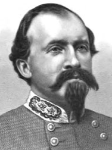
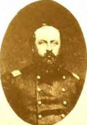
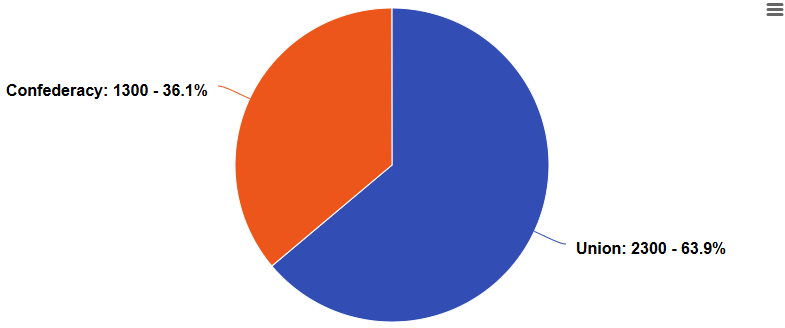
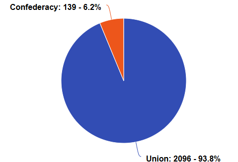

The Battle of Hartsville, also known as the Stones River Campaign, was a Confederate cavalry raid directed at Union troops near the Cumberland River. Although outnumbered nearly 2:1, the Confederates won the battle because of skilled leadership from Brigadier General John H. Morgan. Morgan’s men crossed the Cumberland River at night and attacked the Union at dawn, catching the Union off guard. After a 90-minute battle, the Union surrendered their 1,800 remaining men.
Location
The battle took place near Hartsville, Tennessee, past the Cumberland river. Although the Union were not in camp, they were extremely close and eventually fell back to the camp during battle.
Key Figures

John H. Morgan (Confederate)
John Hunt Morgan was a Confederate leader during the Civil War. He was born on June 1st, 1825, to a white family in Huntsville, Alabama.
Growing up, he was expelled for bad behavior from one of his schools. When he was old enough to enlist, Morgan joined the 1st Kentucky Cavalry
and fought in the Mexican American War under Zachary Taylor. When the Confederates seceded, Morgan was extremely supportive. He enlisted into
the Confederate army and fought alongside General Buckner. Morgan was then promoted and fought in the Battle of Shiloh.
Morgan was particularly skilled at leading quick, deadly cavalry raids against Union forces. In July of 1862, Morgan attacked deep into Union
territory, going behind enemy lines and destroying key infrastructure. His raids caught national attention, and newspapers around the country
covered these stories. At about this time, Morgan took part in the Battle of Hartsville in Tennessee. After winning the battle, he was promoted
to Brigadier General.

Absalom Moore (Union)
Absalom Moore was a Union Colonel who led the Union forces during the Battle of Hartsville. Moore was born on January 8th, 1828, in New Jersey.
Early in his life, he moved to Illinois, becoming a preacher at a church in Chicago. In 1860, he was nominated by the Republican Party for the
office of Clerk of the Circuit Court. He was a great speaker and gained much experience from his time in politics.
When the war began, he was elected as a Colonel and sent to the 104th Infantry Regiment. Moore joined the regiment, and it was at this point in
his career that he fought against Morgan during the Battle of Hartsville. Moore was not experienced. He was elected into the position of Colonel
and had barely any battle experience.
Before the Battle
Union troops camped near Hartsville, Tennessee, with a force of 2,400 troops, commanded by Absalom Moore. These forces were split across the 106th & 108th Ohio Infantry, 104th Illinois Infantry, 13th Indiana Artillery, 2nd Indiana Cavalry, and part of the 11th Kentucky Cavalry. The Union forces had about 2,300-foot soldiers, with a rather insignificant cavalry regiment totaling 100 men.
Meanwhile, Confederates under the command of John Morgan were resting at Baird’s Mill. Morgan had sent scouts to collect information on the Union camp. The scouts underestimated the Union forces and reported about 1,500 Union troops. John Morgan proceeded to ask general Braxton Bragg about a surprise attack. After some persuasion, Bragg gave the go ahead. Morgan was then given the 2nd and 9th Kentucky Infantry Regiments, as well as the 7th, 8th, and 11th Kentucky Cavalry regiments, followed up with men from the 9th Tennessee Cavalry Regiment. In total, the Confederates had about 2,100 troops, most of which were cavalry.

At 10:00 AM on December 6th, 1862, Morgan and his men left camp and marched toward Lebanon. After resting in Lebanon, Morgan’s men left and began marching, eventually making it to the freezing cold Cumberland River by 10:00 PM. Transporting all the troops would have been a logistical nightmare, so Morgan only took the foot soldiers and some cavalry, and a small amount of artillery, meaning that Morgan now only had 1,300 troops with him. Morgan’s men continued to march through the freezing snow toward Hartsville. After hours of marching through the snow, the Confederates were seen by Union scouts, and the two sides exchanged gunfire. The battle had begun.
During the Battle
At about 6:45 AM on December 7th, the Confederates were detected, and the battle began. The Union were ill-prepared and not at all ready to face a Confederate force. Nonetheless, skirmishers of Confederate company G attacked the disorganized Union lines. Caught by surprise, the Union had a difficult time forming lines and fighting the Confederates.
By 7:30 AM, the Confederates led the full charge. The 700 Confederate infantry charged at the Union lines and the two sides exchanged gunfire. On the Confederate left flank, about 340 Confederate cavalry moved to the Union left flank and engaged the Union forces, pushing the Union back a considerable amount. On the right flank, about 260 cavalry engaged the Union forces and attacked them from behind. Then, the Confederate right wing infantry attacked the Union center, which eventually made the entire Union line retreat. At this point, 100 Confederate reinforcements arrived late to the battle after crossing the treacherous Cumberland River.
Moore witnessed what seemed to be a retreat on the right flank and ordered the 104th to charge. However, because his men were so inexperienced and some of the ammunition was incompatible with his muskets, the 106th Infantry scattered and panicked, drawing fire onto the 108th Ohio Infantry. After witnessing so much go wrong, Moore ordered his troops to stop charging and return. He sent the 104th Illinois infantry forward, hoping to block the rebels. Unfortunately for Moore, the 104th Infantry fell back after many casualties. The Confederates proceeded to attack the Union left and center with Infantry, and the Union forces fell back yet again.
It was now one hour and fifteen minutes after the battle began. Seeing his forces collapse and suffer heavy casualties was the last straw. Moore realized that winning this battle would put too many of his troops’ lives into jeopardy, and so he ordered a surrender. Due to the ferocity of the Confederate attack, Moore later reported that he felt as if he was outnumbered ten to one.
After the Battle
In total, the casualties were extreme. On the Union side, 58 troops were dead, 204 were wounded, and 1,834 were captured. This totals to 2,096 troops. On the Confederate side, 21 were killed, 104 were wounded, and 14 were missing. This totals to 139 total casualties. The Confederates proceeded to cross the chilly Cumberland River yet again, only this time with Union prisoners. Mere hours later, Union reinforcements arrived at the battle scene, but they were too late.

The Confederates did get wagons, ammunition, and supplies; supplies they needed desperately. On their way back to camp, the Confederates were honored and praised by the local civilians. However, the battle had little significance in the greater context of the war. The Confederates did not gain any new territory. The battle was merely a hit and run. But the battle did make a lasting impact on Confederate morale. Newspapers all around the confederacy praised the attack, and Jefferson Davis himself promoted Morgan to brigadier general. The raid was named one of the most brilliant cavalry raids in U.S. history, and Confederate soldiers etched “Hartsville” into their flags and uniforms.
The Union response was not so joyful. Seeing such a decisive Confederate victory took a toll on Union morale. Several Union officers were dismissed, and the Union tightened logistical operations to ensure such an embarrassment would not happen again. Union high command also learned that Confederate cavalry was capable of striking deep into Union territory and wreaking havoc. Although the battle was small, it effectively humbled Union high command.
Fun facts!
The battle was a confederate victory. When going home, the Confederates were celebrated by the locals and carried much-needed guns and supplies. The president of the Confederacy, Jefferson Davis, gave John Morgan a promotion. The cavalry raid was so successful that it was named one of the best cavalry raids in history by southern and northern generals alike, and the event was celebrated throughout the Confederacy. Over 1,800 union troops were captured; a crushing defeat. The confederates, on the other hand, had only about 100-150 casualties. Catching the Union by suprise was the ultimate factor that ensured Confederate victory. Confderate general John Morgan became infamous and gained lots of experience from this raid.
However, compared to the other battles in the civil war, this battle was rather small and insignificant. The main impact of this battle was the impact on confederate morale. Union forces recaptured the lost territories mere days later. The battle was in a way a "hit and run", as the win did not bring anything to the Confederate table. The entire ordeal didn't even last long either. The battle lasted 90 minutes, and the only reason why the Confederates won was because the battle was a suprise attack.